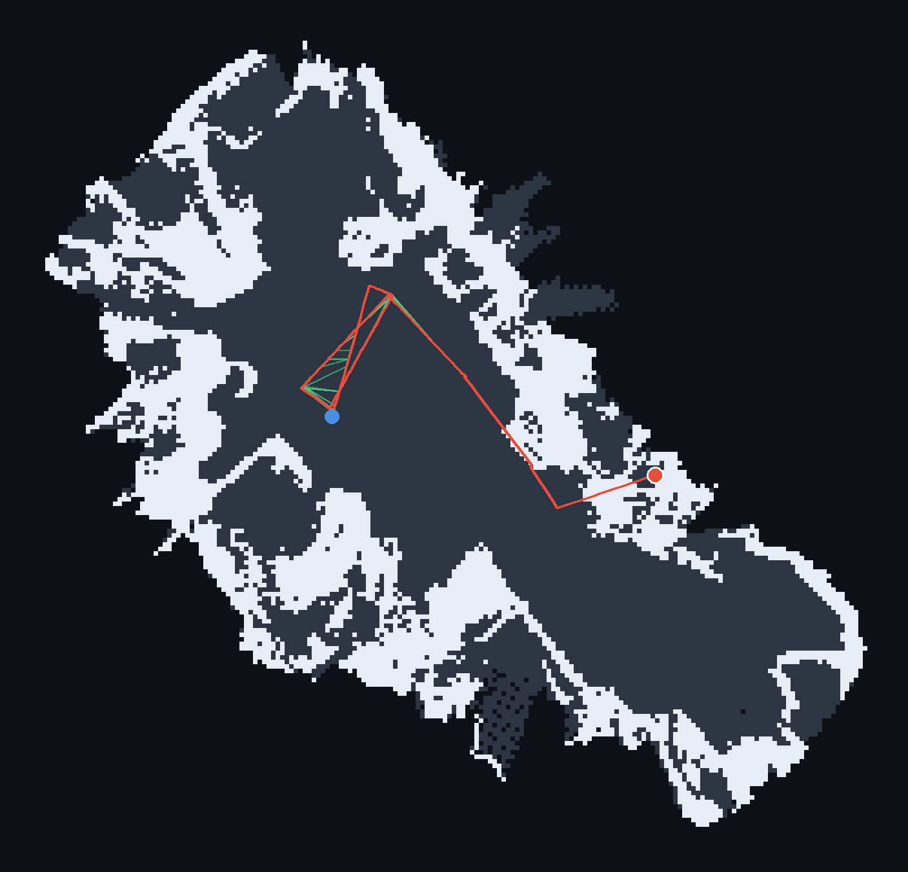
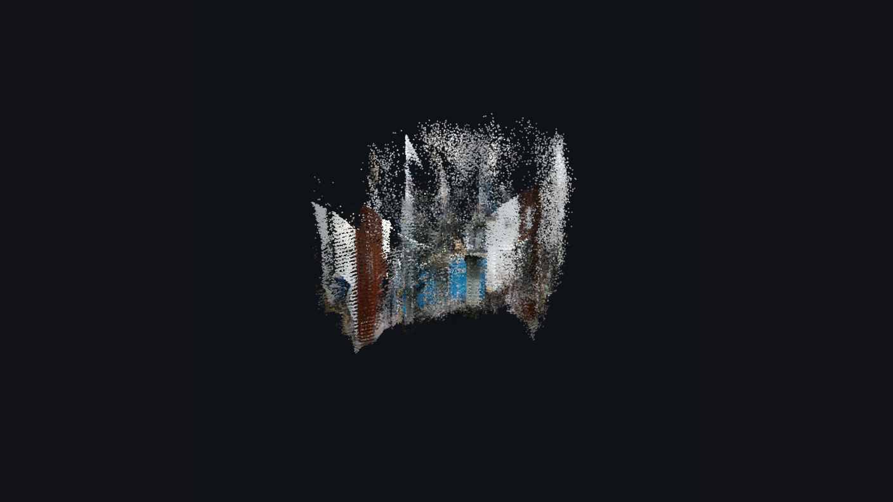
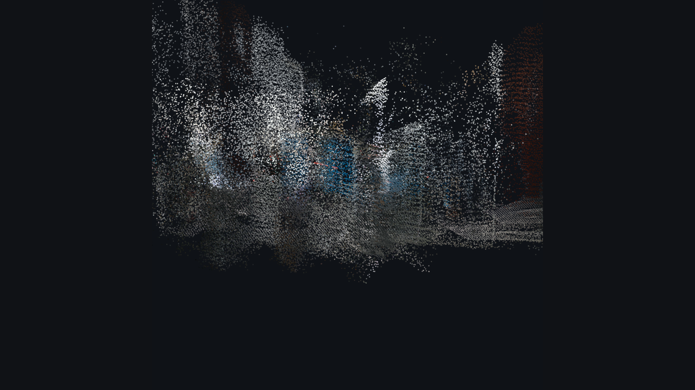

03 / Real hardware · Kobuki base · RTAB-Map
RGB-D SLAM closes loops on the robot, then Nav2 drives to goals on the map it just made — live on hardware.
A fused RGB-D point cloud with real camera colours — the map the robot navigated on, turning in 3-D.
Read from the RTAB-Map pose-graph database and the final Nav2 run Observed.
The grid Nav2 actually navigated on — free space dark, obstacles light, trajectory red, accepted loop closures green, start blue, final pose red. The spur at lower right was mapped by a targeted corridor drive.



The ROS 2 Jazzy Gazebo track that mirrors this project's pipeline without hardware: the saved SLAM map loaded into map_server + AMCL, then Nav2 driving five waypoints through the pillar-field corridors. On screen: the occupancy grid, the global plan, the inflation-layered costmaps around every pillar and the live goal feedback — 5/5 waypoints reached, same concepts as the real robot, reproducible by anyone with the repo.
Numbers are read from the RTAB-Map pose-graph database, not eyeballed — 0 collisions across 3 guarded drives. The map, cloud and Nav2 goal error above are from real hardware; the waypoint mission is a Gazebo simulation twin of the same pipeline, not hardware.